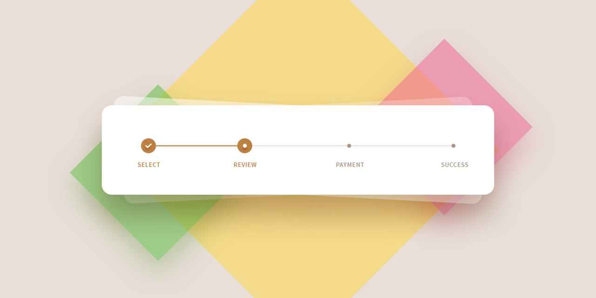

<ion-header >
  <ion-toolbar color="dark">
    <ion-title>Welcome Farmer</ion-title>
  </ion-toolbar>
</ion-header>

<ion-content>
  <!-- <ion-grid>
    <ion-row >
      <ion-col size="12" size-sm class="ion-justify-content-between"> -->
        <ion-card>
          <ion-card-header>
            

          </ion-card-header>
          <!-- <ion-item>
            <ion-icon name="create-outline" slot="start" color="danger"></ion-icon>
          </ion-item> -->
          <h3>Application Form</h3>

          <ion-card-content>

          Organic Farm Certication
          <ion-button tappable slot="end" color="danger" (click)="viewApplicationForm()">Proceed</ion-button>

          </ion-card-content>
        </ion-card>
      <!-- </ion-col>
</ion-row>
<ion-row >

      <ion-col size="12" size-sm class="ion-justify-content-between">
        --> <ion-card>
          <ion-card-header>
            

          </ion-card-header>
          <!-- <ion-item>
            <ion-icon name="eye-outline" slot="start" color="success"></ion-icon>
          </ion-item> -->
          <h3>View Application</h3>
          <ion-card-content>
            Click to view all applications.
            <ion-button tappable  slot="end" (click)="viewAllApplication()" color="success">Proceed</ion-button>

          </ion-card-content>
        </ion-card>
        <!--
      </ion-col>
      </ion-row>
    <ion-row >

      <ion-col size="12" size-sm class="ion-justify-content-between"> -->
        <ion-card>
          <ion-card-header>
            

          </ion-card-header>
          <!-- <ion-item>
            <ion-icon name="analytics-outline" slot="start" color="primary"></ion-icon>
          </ion-item> -->
          <h3>Status of Application</h3>

          <ion-card-content>
            Application Status Hierarchy.
            <ion-button tappable slot="end" (click)="viewStatus()" color="primary">Proceed</ion-button>

          </ion-card-content>
        </ion-card>
      <!-- </ion-col>
    </ion-row>
  </ion-grid> -->

</ion-content>
<!-- <ion-button>Default</ion-button>
<ion-button color="primary">Primary</ion-button>
<ion-button color="secondary">Secondary</ion-button>
<ion-button color="tertiary">Tertiary</ion-button>
<ion-button color="success">Success</ion-button>
<ion-button color="warning">Warning</ion-button>
<ion-button color="danger">Danger</ion-button>
<ion-button color="light">Light</ion-button>
<ion-button color="medium">Medium</ion-button>
<ion-button color="dark">Dark</ion-button> -->
